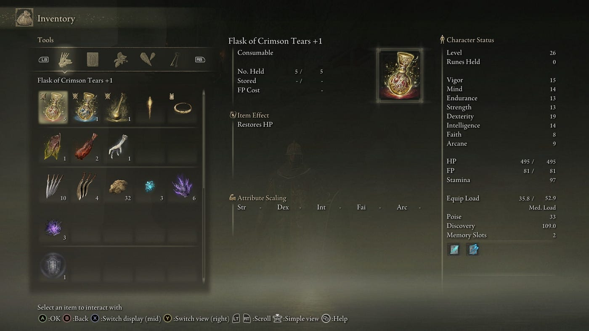

Just Getting Started
Explore the tutorial area thoroughly for essential early-game items and tips.
For beginners in Elden Ring, initial character selection isn't critical; you can reallocate stats after the second main area boss. Explore the tutorial area thoroughly by descending the hole near the seated spirit after the first boss. Balancing discovery and external help is key; while the game rewards firsthand exploration, NPC questlines can be complex. Rely on resources like the Elden Ring wiki for guidance, supplemented by community forums for additional insights.
General Tips
Plan your character build and prioritize leveling strategies. Understand armor, stamina, and combat tactics.
When leveling in Elden Ring, prioritize planning your build and understanding soft caps for each stat. Focus on increasing vigor for survivability and your primary damage stat (such as strength, dexterity, intelligence, faith, or arcane) for combat effectiveness. Endurance enhances equip load and stamina, crucial for both melee and magic builds, though magic-focused builds should prioritize FP over stamina. Optimize armor selection for defense without exceeding medium equip load to maintain stamina regeneration. Adapt your armor choices based on enemy types and environments to maximize protection and combat effectiveness.
In Elden Ring, master navigating menu screens by using shortcuts like X/square, Y/triangle, and R3/right stick click to access hidden information. Use R3 to toggle the right menu screen to prevent it from closing when using items. Check quest items and equipment descriptions (accessed with X/square) for crucial details like passive effects on armor. While the game can't be traditionally paused, accessing "Menu Explanation" under equipment or map allows a pause, though multiplayer functions remain active. LB/L1 and RB/R1 switch equipment screens swiftly, while LT/L2 and RT/R2 accelerate menu navigation.
